What it does
DeckCal reads your Google Calendar and puts it where you cannot miss it: on the keys in front of you.
A key shows a countdown to your next meeting, or the time remaining in the one you are already in. A blue bar closes the gap to the next meeting, a yellow fill sweeps across the key over the last few minutes, and a green fill tracks time elapsed once the meeting is under way. Press the key to join.
At a glance
-
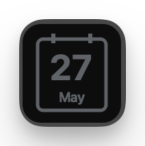
Idle Nothing on the calendar today any time soon.
-
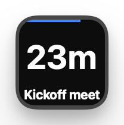
Countdown Time remaining to the next meeting, with a blue bar.
-
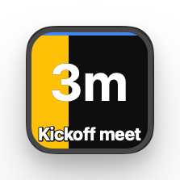
Imminent In the last 5 minutes a yellow block gradually fills the key.
-
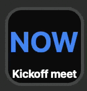
Meeting starts Flashes
NOWuntil you press. Pressing joins the meeting. -
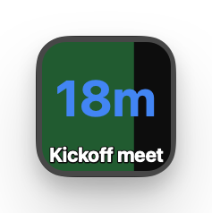
In the meeting Time remaining, with a green bar showing time elapsed.
-
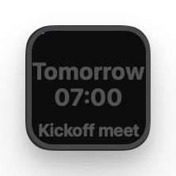
Beyond today Distant events are dimmed and show a time of day instead of a countdown.
-
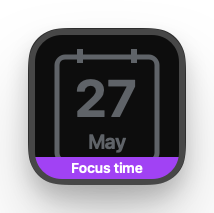
Focus time Purple footer band, so you can still see the next regular meeting.
-
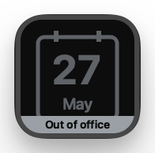
Out of office Grey footer band, so you can still see the next meeting.
Multi-key sweep
Place several Meeting countdown (or Upcoming meeting) keys next to each other and the yellow imminent fill sweeps across them as a single band in the last few minutes before a meeting. Far more visible than a single key can manage on its own.
Four actions
-
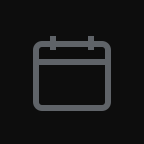
Meeting countdown
The meeting you are in, otherwise the next upcoming one. The "do everything" action.
-
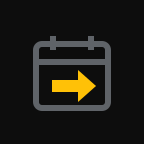
Upcoming meeting
Only the next upcoming meeting. Ignores meetings already in progress.
-
Ongoing meeting
Only the meeting you are currently in. Idle when nothing is happening.
-
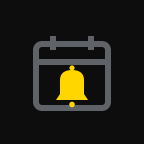
Meeting alert
A blank tile that lights up only as a meeting starts. Long press joins it.
Features
-
Live countdown
Time remaining to (or within) a meeting, refreshed every second, with a coloured bar that fills as the meeting elapses.
-
Imminent fill
A yellow block gradually fills the key over the last few minutes, sweeping across neighbouring keys as one band.
-
Press to join
Short press opens the current Google Meet, Zoom, or Teams meeting, in a browser or an app of your choosing. Long press opens the meeting's first attached doc.
-
Multiple accounts
Sign in with one or more Google accounts and tick exactly which calendars feed the countdown.
-
Special events
Out of office and focus time events get their own footer band, so you can still see your next regular meeting.
Install
Download the latest
com.ewels.deckcal.streamDeckPlugin file from the
GitHub releases page
and double click it. Stream Deck installs the plugin and adds the four
DeckCal actions to its action list. Drag one onto a key, then use the
sign in button in the key's settings panel to connect a Google
account.
Privacy
DeckCal runs entirely on your own machine. There is no backend, no analytics, and no tracking. Calendar data is read on a read-only basis and never leaves your computer.
Sign in uses a loopback PKCE flow (RFC 8252), so your Google credentials are only ever handled by Google itself. Read the full DeckCal privacy policy.